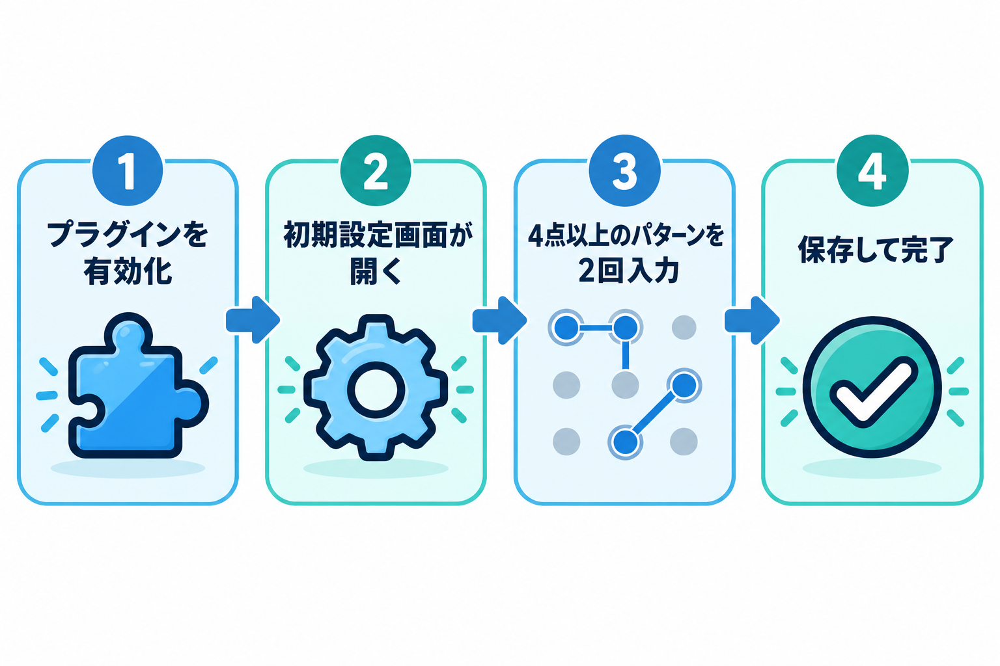
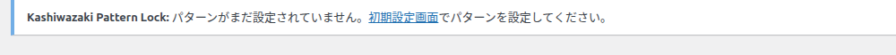
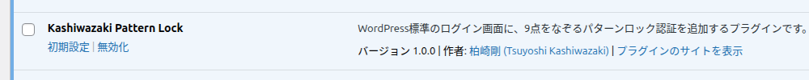

インストール・初期設定
プラグインを有効化してから、最初のパターンを設定するまでの流れです。設定が終わるまでは、ログインは今までどおりユーザー名とパスワードだけで行えます。

1. プラグインを入れて有効化する
-
1
プラグインのフォルダーを wp-content/plugins/ にアップロードします。
-
2
管理画面の「プラグイン」→「インストール済みプラグイン」を開き、Kashiwazaki Pattern Lock の「有効化」を押します。
-
3
有効化すると、管理画面に初期設定画面が自動で開きます。開かない場合は、左メニューの Kashiwazaki Pattern Lock、またはプラグイン一覧の「初期設定」リンクから開けます。
一括で有効化したときは自動で移動しません。プラグイン一覧の「初期設定」リンクから開いてください。
2. プラグイン一覧での表示
プラグイン一覧には、このプラグイン専用のリンクと案内が表示されます。

案内には「Kashiwazaki Pattern Lock: パターンがまだ設定されていません。初期設定画面でパターンを設定してください。」と表示されます。リンクを押すと、そのまま設定画面が開きます。

| 表示 | 意味 |
|---|---|
| 初期設定 | まだパターンが設定されていません。このリンクから設定画面を開けます。 |
| 設定 | パターンが設定済みです。このリンクから設定画面を開けます。 |
3. 最初のパターンを設定する
初期設定画面で、サイト共通のパターンを決めます。くわしい操作は管理画面：初期設定をご覧ください。

使う点は多いほど推測されにくくなります。6点以上をおすすめします。
設定すると、次回のログインからパターンが必要になります。パターンを忘れると管理画面に入れなくなります。復旧の手順はトラブルシューティングにまとめています。
4. 管理メニューの場所
設定画面は、管理画面の左メニューにも Kashiwazaki Pattern Lock として表示されます。メニューの並びは「設定」のすぐ下です。
パターンが未設定のときは初期設定画面、設定済みのときは管理画面が開きます。
5. 設定後に起きること
| きっかけ | 起きること |
|---|---|
| プラグインを有効化 | パターンが未設定の間は、ログインはこれまでどおりです。 |
| パターンを保存 | 次回のログインからパターンが必要になります。画面は「設定済み」の管理画面に変わります。 |
| プラグインを無効化 | パターン入力欄が消え、標準のログインに戻ります。設定内容は残ります。 |
| プラグインを削除 | 設定内容と失敗回数の記録が削除されます。 |